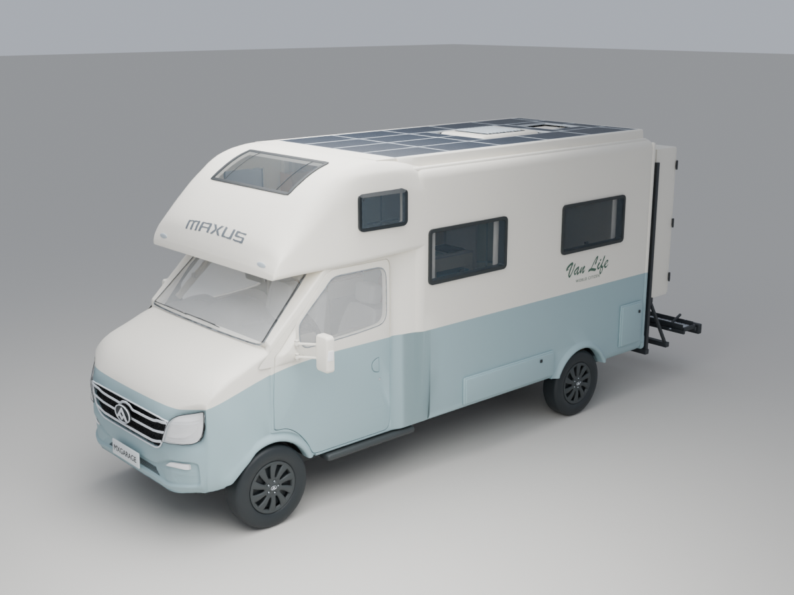
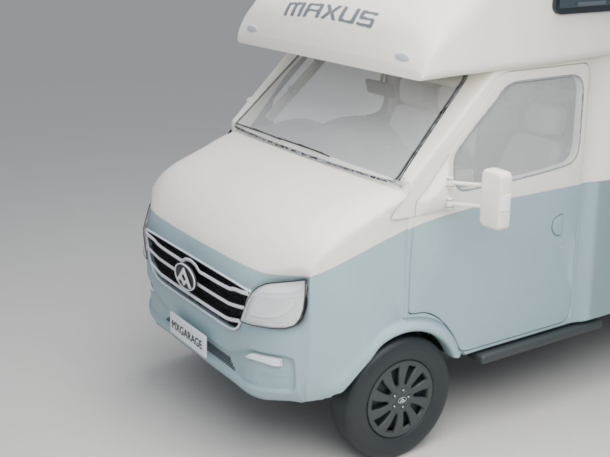
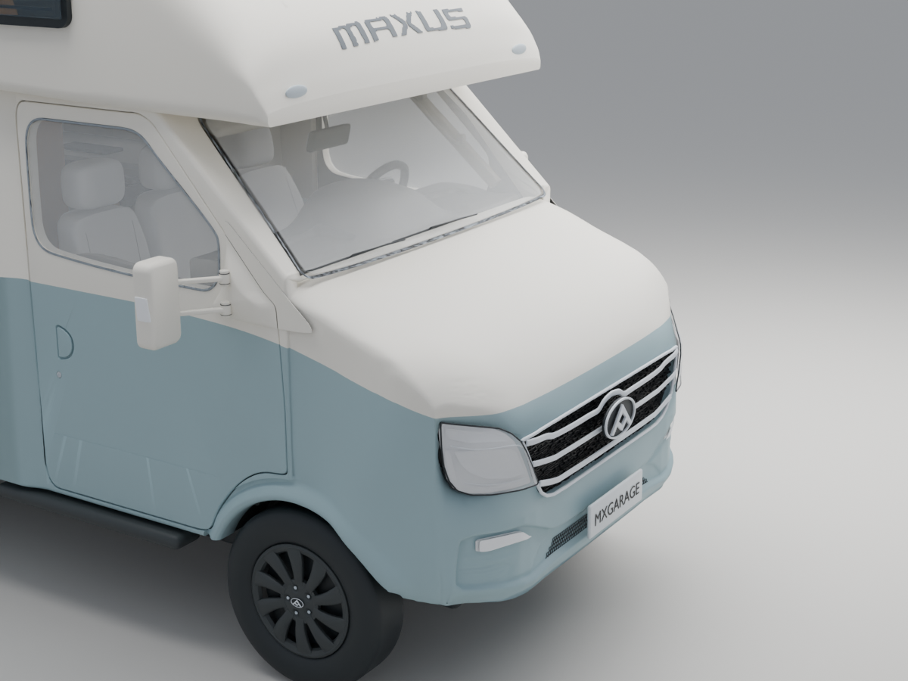
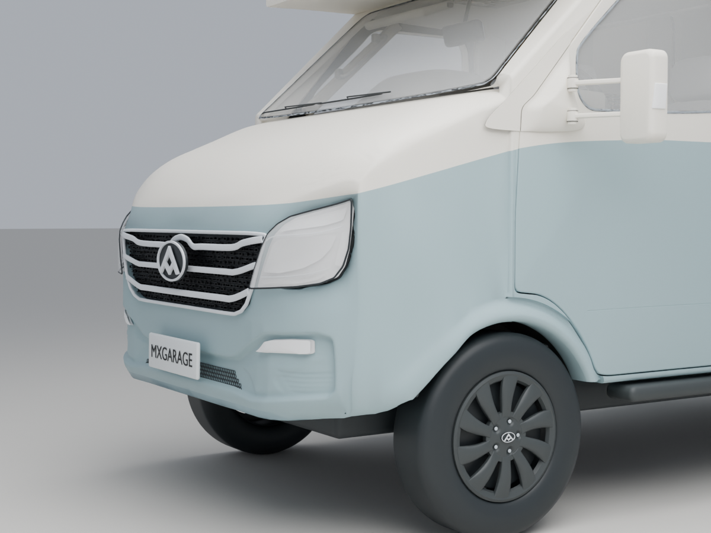
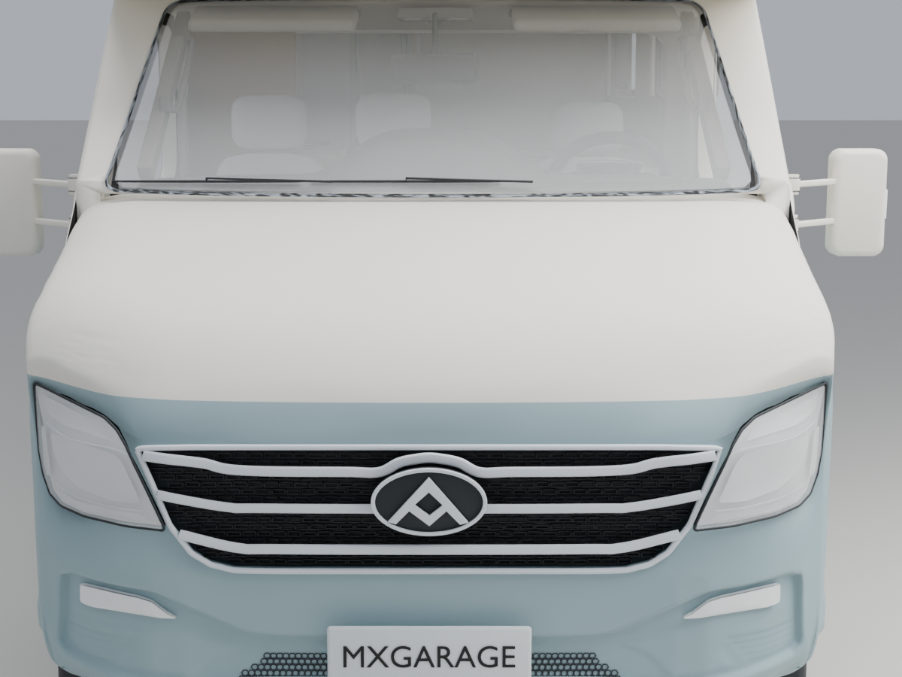
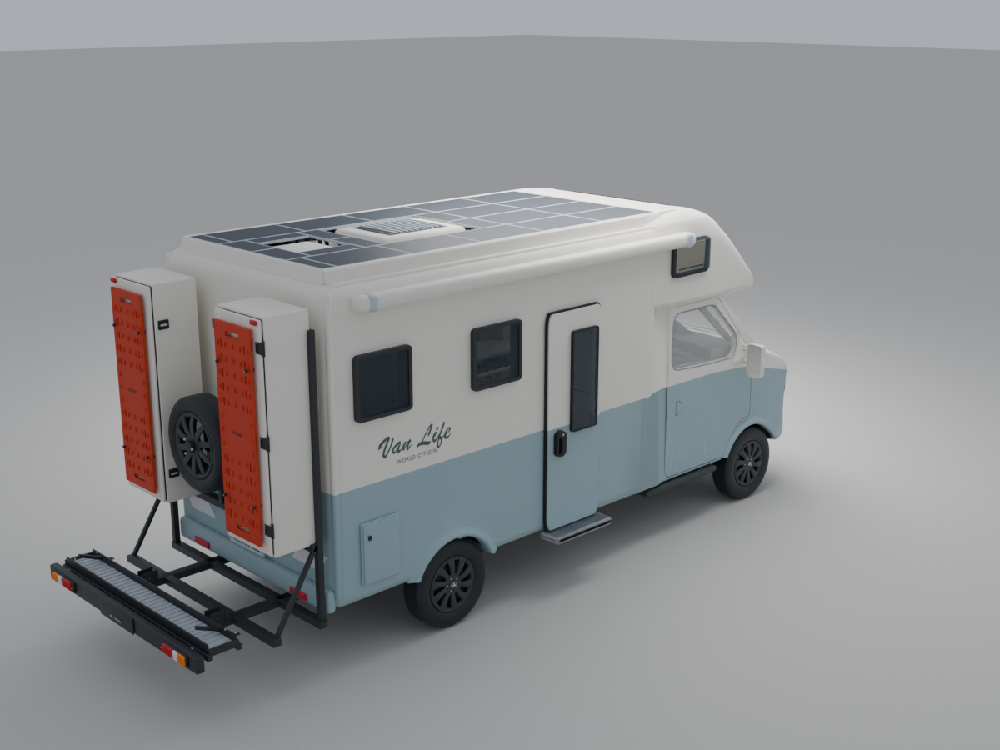
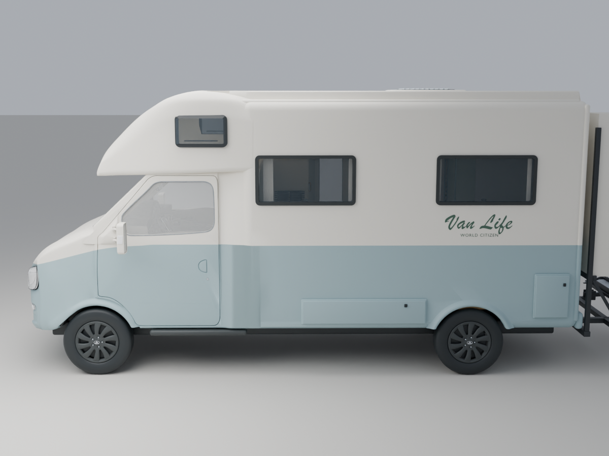
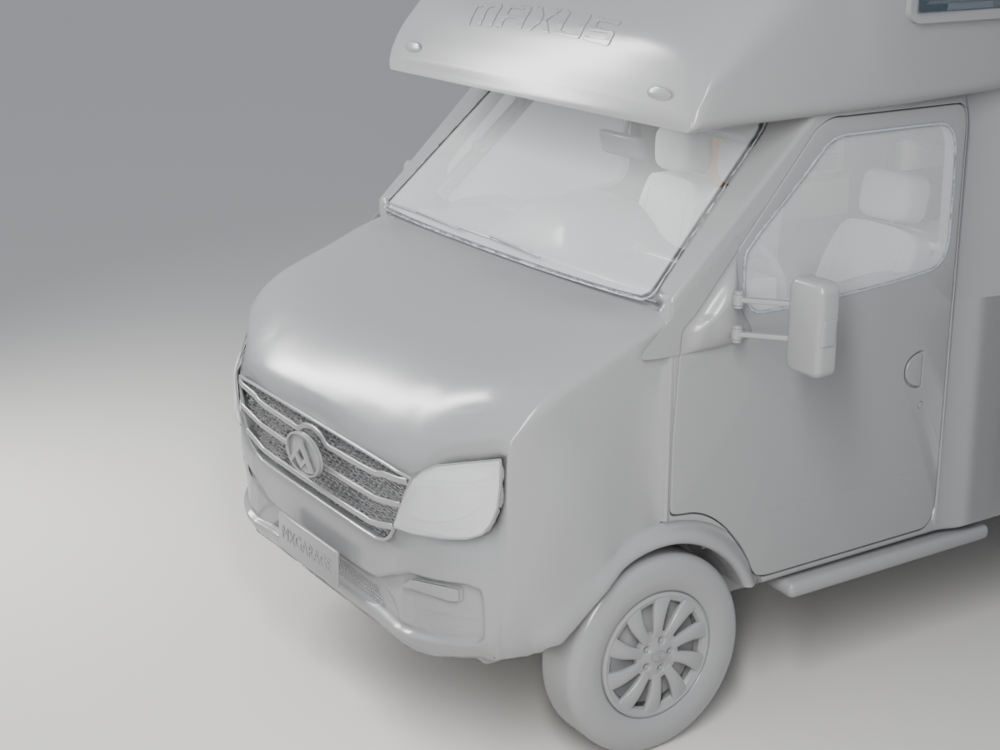
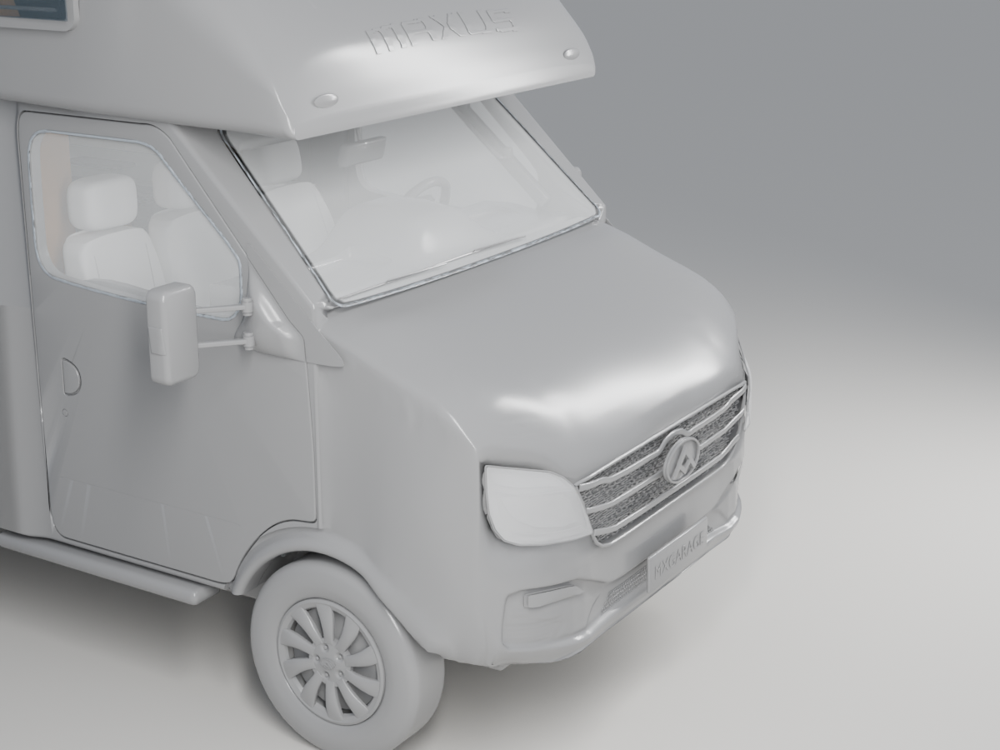
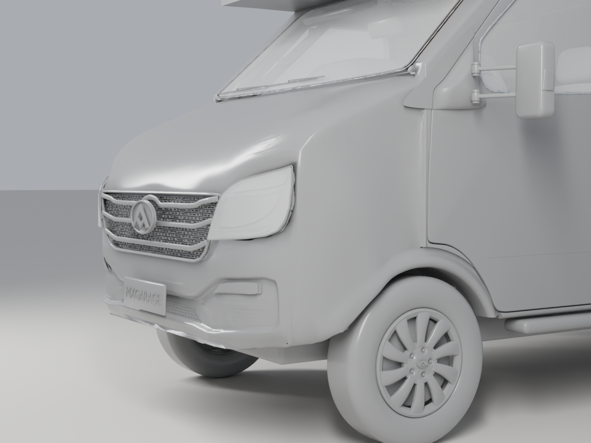

← 回到互动模型让车头的转面更自然
修顺主灯、下灯外侧到车身侧面的过渡，整理底沿和细碎褶皱。冰淇淋蓝与暖白配色保留。

车头、车顶与生活舱同版显示。未整体拉长车头或改变轴距。
左前：主灯至下灯的连续转面
右前：消除局部深褶皱
低位：底沿圆顺收口
正前：两侧轮廓对照
右后：保留生活舱布局
侧面：窗位与车身比例
左前灰模 · 条形高光检查
右前灰模 · 条形高光检查
低位灰模 · 条形高光检查下载同版 FreeCAD 派生工程 · 版本与待核项目 · 上一轮涂装与卫生间门
20261015-R7。以上均为实际三维模型渲染，灰模用于检查曲面。外壳仍是参考网格，局部造型复核不等于原厂曲面精度或施工验收；E01R10、WC01、CR50原生CAD及旧PDF/分享图册尚未同步。